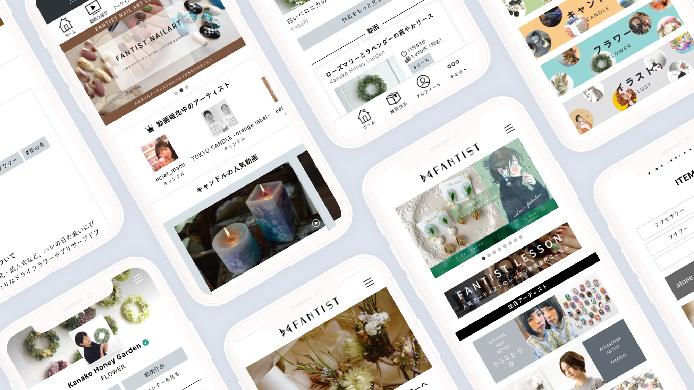
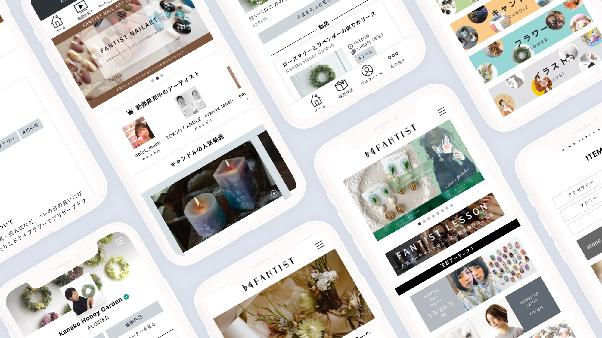

FANTIST
UX / UI / WEB
FANTISTは人気のアーティストを見ることができるカタログです。アクセサリー・イラスト・フラワー等で活動的なアーティストの作品やレシピ動画を購入したり、アーティストにコメントを送ることができます。私はこのプロジェクトにデザイナーとして参画しています。
FANTISTでは「作品」ではなく「アーティスト」に重点を置き、作品を手にとってくれた方が継続してアーティストの活動をチェックできるようなプラットフォームになるよう心がけています。サイトのテイストはシンプルにしつつ、アーティストの個性が出せるようアーティスト本人や写真を印象づけるようなデザインにしています。
 
